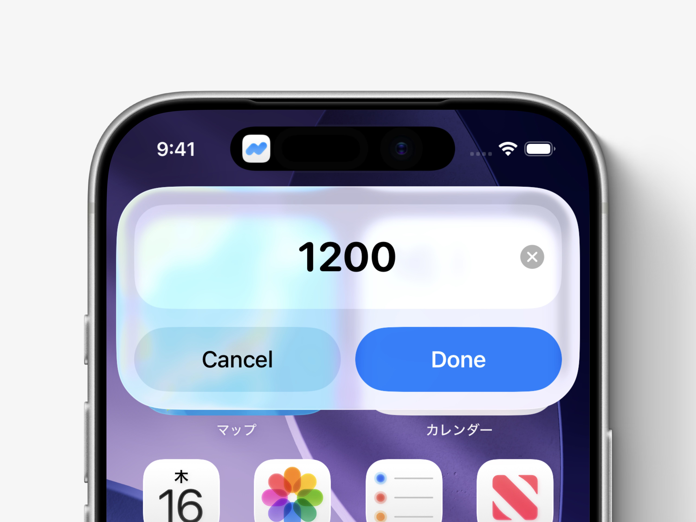

アプリを開かず、
ロック画面からすぐ記録
Liltはショートカットに対応しています。 ロック画面に設定しておくことで、 アプリを開かなくてもすばやく記録できます。 コンビニのレジで決済した直後など、 時間がない時のクイック登録に便利です。

今回のコツ
- ショートカットを使うと、Liltを開かずに記録できます。
- ロック画面に設定しておくと、決済後すぐに記録できます。
- 支出記録・収入記録のどちらもクイック登録できます。
2つの登録方法
ロック画面から記録する方法は、主に2つあります。 すぐに使いたい場合は「簡単設定」、 表示するカテゴリや固定金額などを調整したい場合は 「応用設定」がおすすめです。
簡単設定
- ロック画面を開き、画面の余白部分を長押しします。
- 画面下中央の「カスタマイズ」をタップします。
- 画面下左右の丸いアイコンから、不要な方の「−」をタップします。
- 「＋」をタップし、「ショートカットを実行」を選択します。
- 「選択」をタップし、検索バーで「Lilt」と検索します。
- 「支出記録」または「収入記録」から、クイック登録したい方を選びます。
- 画面右上の「完了」をタップします。
応用設定
- 「ショートカット」アプリを開き、 「＋」から新規ショートカットを作成します。
- 「アクションを検索」で「Lilt」と検索し、 「支出記録」または「収入記録」を選択します。
- 「＞」をタップして、必要に応じて詳細項目を設定します。
- ショートカットを保存したら、 「簡単設定」と同じ手順でロック画面に追加します。
- 最後に、今回作成したショートカットを選択します。
応用設定でカスタマイズできる項目
- Amount 未入力のまま推奨。 毎回固定金額で登録する場合は入力します。
- 選択可能な支払元 / 入金先 Liltに登録されている支払元・入金先から、 実行時に表示する候補を絞ることができます。
- 支払元 / 入金先 未設定のまま推奨。 毎回固定する場合は選択します。
- 選択可能なカテゴリ Liltに登録されているカテゴリから、 実行時に表示する候補を絞ることができます。
- カテゴリ 未設定のまま推奨。 毎回固定カテゴリで登録する場合は選択します。
- Memo 未入力のまま推奨。 毎回固定メモを入れたい場合は入力します。
- 実行時に表示 オフ推奨。 ショートカット側の通知を表示せず、 よりスムーズに実行できます。
補足
ロック画面にLiltのショートカットを設定すると、 アイコンを長押しするだけでクイック登録を開始できます。 よく使う記録方法に合わせて設定しておくと、 日々の記録がさらにスムーズになります。